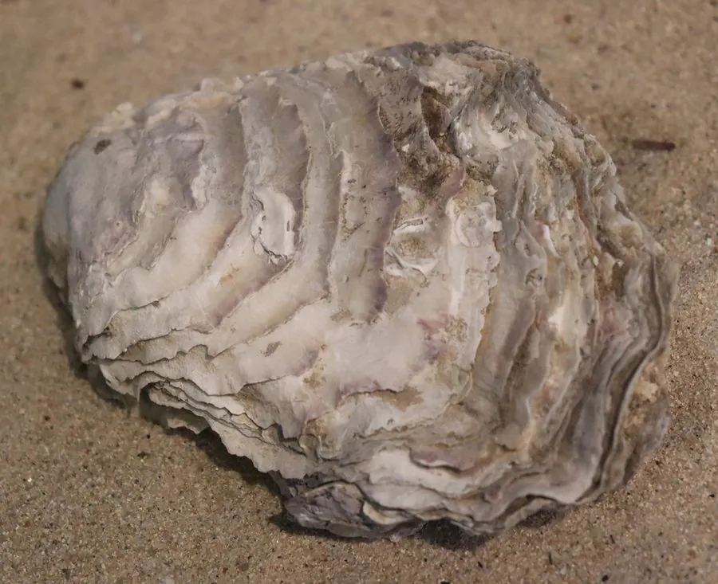

软体动物 · 动物界
葡萄牙牡蛎 Crassostrea angulata

壳形狭长、壳面有紫色条纹的牡蛎，原产欧洲西南部，现为中国南方主要养殖蚝种，栖息于潮间带至浅海。
- 分类
- 门软体动物门纲双壳纲目牡蛎目科牡蛎科属巨牡蛎属
- 栖息环境
- 潮间带中下区至浅海的河口与港湾，以左壳固着
- 地理分布
- 原产葡萄牙、西班牙与摩洛哥大西洋沿岸，现中国南方广泛养殖
- 保护级别
- 尚无保护级别；为重要经济贝类，野生种群少见
物种志
葡萄牙牡蛎的贝壳呈狭长的三角形至楔形，壳高可达十五厘米，左壳深凹，右壳较平，壳表灰白至灰褐色，常有紫色或紫黑色的条纹和斑块，壳面有粗糙的鳞片层和生长纹。壳内面白色，有时带淡紫色，闭壳肌痕呈肾形。它的壳形比太平洋牡蛎更狭长，壳质也更厚。
它原产于葡萄牙、西班牙和摩洛哥的大西洋沿岸，后随养殖扩散到欧洲其他地区，并被引入中国南方，现为福建、广东一带的主要养殖牡蛎之一，当地多称福建牡蛎。它栖息在潮间带中下区至浅海的河口和港湾，靠左壳固着在石块、贝壳和养殖架上，滤食浮游藻类和有机颗粒，能耐受较广的盐度变化，在河口咸淡水交汇处生长良好。它是雌雄异体，繁殖期在春夏，幼虫浮游后附着变态。它尚无保护级别，是重要的经济贝类，养殖产量很大，野生种群反而少见。
形态与习性
- 壳高可达十五厘米，狭长三角形
- 壳面灰白至灰褐，有紫色条纹与斑块
- 壳质较厚，有粗糙鳞片层和生长纹
- 栖息水层潮间带中下区至浅海河口港湾
- 耐盐性能耐受较广盐度，咸淡水交汇处生长好
- 养殖中国南方主要养殖蚝种，福建广东多见
趣味知识
- 它在福建被叫作福建牡蛎，其实是几百年前从葡萄牙一带传过来的。
- 壳面上那几道紫黑色条纹，在阳光下像涂了一层淡墨。
- 它耐得住河口半咸的水，所以在咸淡水交汇的港湾里长得最好。